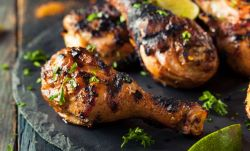

JAMAJKA


Tradiční jídla
Jerk chicken
Jedná se o kuřecí (většinou křídla) na grilu ve speciální jerk omáčce.

Ackee and salt fish
Jedná se o ovoce (Ackee) připravované s rybou. Servírované spolu se zeleninou zvanou yam a zeleným banánem.